▲ 소요산 입구 일대 단풍 길(한국관광공사 소요산국민관광지 사진). 촬영 시기는 확인하지 못했고 올해 사진이 아니다. 사진=한국관광공사
"소요산은 입장료가 없다던데, 단풍철 주차는 얼마일까?" 한국관광공사 TourAPI의 소요산국민관광지 항목은 입장료 '무료', 상시 개방·연중무휴, 주차요금 경형 1,000원·소형 2,000원·중형 3,000원·대형 5,000원으로 올라 있다. 2026년 10월 12일 오늘(월요일) 기준으로 확인한 값이다. 다만 소요산은 도립공원이 아니라 1981년 지정된 국민관광지다(경기일보 2023). 올해 소요산만의 단풍 예측·첫 단풍 관측값은 공식 자료에서 찾지 못했지만, 해마다 10월 말 열려 온 소요단풍문화제는 동두천시 누리집에 2026년 10월 31일(토)로 올라 있다(주최 동두천문화원). 이 글은 확인한 값과 확인하지 못한 값을 나눠 적고, 1호선 소요산역 접근·자차 주차·자재암·원효폭포·하백운대 코스를 정리했다. 북한산 단풍 시기는 북한산 단풍 절정 기사에 있다.
💡 먼저 결론
입장료는 TourAPI 기준 무료, 주차는 1,000~5,000원이다. 단풍은 소요산 단독 공식 날짜가 없어서, 산림청 전국 단풍나무류 절정(10월 31일, 50% 기준)과 기상청 북한산 평년 절정(10월 27일, 80% 기준)을 참고선으로 놓고 카프리즘 추정으로 10월 24일(토)~11월 1일(일) 전후를 가장 무난한 구간으로 잡았다. 소요단풍문화제는 동두천시 누리집에 2026년 10월 31일(토), 소요산 야외음악당, 주최 동두천문화원으로 올라 있다(세부 프로그램은 확인하지 못함). 같은 누리집은 소요산 단풍이 가장 아름다운 시기를 '매년 10월 마지막 주부터 11월 첫 주'로 소개한다. 동두천시 관광 누리집 바로가기
▲ 소요산 입구 일대 단풍 길(한국관광공사 소요산국민관광지 사진). 촬영 시기는 확인하지 못했다. 사진=한국관광공사
1. 한눈에 보기 — 확인한 것과 확인하지 못한 것
검색 결과의 날짜는 작년 자료가 섞이기 쉬워서, 아래 표는 TourAPI(2026년 10월 7일 최종 수정으로 표시된 항목)와 2025년·2026년 기사에서 날짜가 확인된 값만 담았다. 관광지원센터 주차장 요금처럼 출처가 서로 다른 값은 해당 칸에 표시했다.
| 항목 | 확인된 값 | 상태·근거 |
|---|---|---|
| 성격 | 경기 동두천시 상봉암동 소요산국민관광지(도립공원 아님) | TourAPI 주소 평화로2910번길 148-20. 국민관광지 지정은 1981년(경기일보 2023) |
| 개방·휴무 | 상시 개방, 연중무휴 | TourAPI |
| 입장료 | 무료 | TourAPI 요금 항목. 같은 정보를 옮긴 사이트 한 곳에는 어른 1,000원·청소년 600원·어린이 300원이 함께 적혀 있어 현재 부과 여부는 동두천시 확인 필요 |
| 주차요금 | 경형 1,000원·소형 2,000원·중형 3,000원·대형 5,000원 | TourAPI. 등산 블로그 1곳은 관광지원센터 공영주차장을 종일 2,000원 고정으로 적어 체계가 다름(공식 확인 못 함) |
| 문의 | 동두천시청 체육관광과 031-860-2059 / 2049 | TourAPI |
| 올해 소요산 단풍 예측 | 소요산 단독 값을 확인하지 못했다 | 산림청 지도에서 소요산 지점 값을 찾지 못함 |
| 소요단풍문화제 2026 | 10월 31일(토), 소요산 야외음악당, 주최 동두천문화원 | 동두천시 문화관광 누리집 '소요단풍문화제' 페이지(2026-10-12 확인), 문의 031-860-2063. 시작 시각·프로그램·회차는 확인하지 못함 |
| 2026년 입산통제·탐방로 통제 | 공고를 확인하지 못했다 | 동두천시 체육관광과에 문의 |
| 관광 거점시설(구 축산물브랜드육타운 리모델링) | 올해 10월 개장 예정으로 보도(세계일보 2026-07). 2026-08-10 도의원 현장 점검 기사에는 개장일 언급 없음 | 정확한 개장일·개장 여부·주차 계획은 확인하지 못함 |
2. 단풍 시기 — 소요산 공식 날짜가 없을 때 쓰는 참고선
먼저 기준이 다르다. 기상청은 산 전체의 약 20%가 물들면 첫 단풍, 약 80%면 절정으로 본다. 산림청·국립수목원의 2026년 예측지도는 잎의 50%가 물든 시점을 절정으로 잡는다(기존 기사 산림청 공식 단풍 절정 지도). 이 글의 소요산 구간은 둘 중 어느 쪽의 공식값도 아니고, 아래 참고선에서 뽑은 카프리즘 추정이다.
| 참고값 | 날짜 | 기준 | 출처 |
|---|---|---|---|
| 산림청 전국 단풍나무류 절정 | 10월 31일 | 잎 50% | 산림청 보도자료(2026-09-22), 기존 기사 인용 |
| 산림청 은행나무 절정 | 10월 30일 | 잎 50% | 같은 자료 |
| 기상청 북한산 평년 첫 단풍 | 10월 14~15일 | 산 전체 약 20% | 기상청 보도자료(2019) 외, 북한산 기사 정리 |
| 기상청 북한산 평년 절정 | 10월 27~28일 | 산 전체 약 80% | 같은 기사. 올해 북한산 관측값은 확인 못 함 |
| 동두천시 누리집의 소요산 단풍 소개 | 매년 10월 마지막 주~11월 첫 주 | 기준 불명(연중 일반 안내, 올해 예측 아님) | 동두천시 문화관광 누리집 소요단풍문화제 페이지 |
| 소요단풍문화제 개최일(참고) | 2022-10-23, 2025-10-26, 2026-10-31 | 행사일(단풍 날짜 아님) | 뉴스서울, 아시아경제, 동두천시 누리집(2026) |
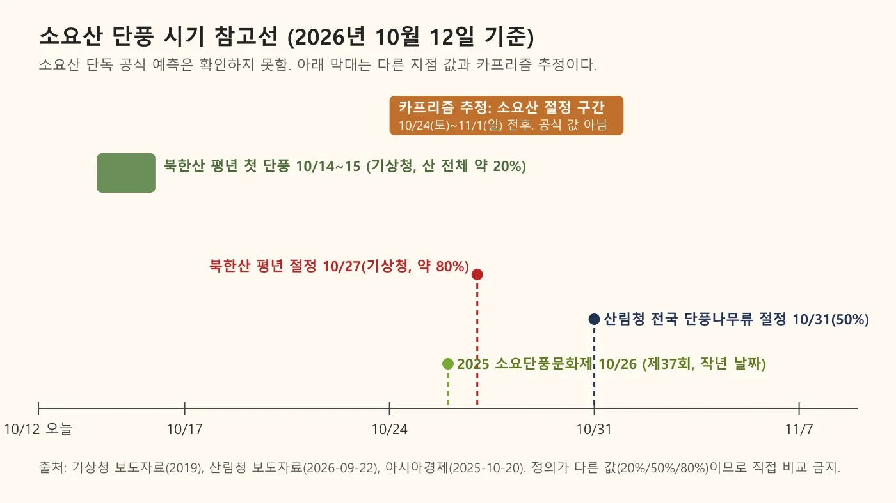
▲ 소요산 단풍 시기 참고선과 카프리즘 추정 구간. 소요산 단독 공식 예측이 아니다. 사진=카프리즘 제작
소요산은 정상 의상대가 587m(동두천시 누리집·TourAPI 소개문. 경기일보 2023 기사는 536m, TourAPI 등반코스 항목은 560m로 적어 자료마다 다르다)로 높지 않아서 북한산의 80% 평년선과 산림청 50% 선 사이, 곧 10월 하순~11월 초에 가장 짙을 것으로 추정했다. 아래 주말표도 같은 추정이며, 실제 색은 현장 사진과 동두천시 공지로 확인하는 편이 안전하다.
| 주말 | 추정 상태 | 추천 코스 |
|---|---|---|
| 10월 17~18일 | 초입은 대체로 푸르고 정상부·그늘 일부만 물들기 시작했을 가능성 | 자재암까지 완만한 길 산책(색이 약해도 계곡 풍경) |
| 10월 24~25일 | 단풍이 한창 번지는 구간. 문화제(10월 31일)보다 먼저 와서 비교적 한산할 가능성 | 자재암·선녀탕 왕복 또는 일주문~자재암 단풍길 |
| 10월 31일~11월 1일 | 추정상 가장 무난. 산림청 전국 절정일(10월 31일)과 소요단풍문화제(10월 31일 토요일)가 겹쳐 토요일은 혼잡 가능, 일요일(11월 1일)이 상대적으로 낫다고 추정 | 하백운대·중백운대 능선, 입구 단풍길 |
| 11월 7~8일 | 저지대는 잎이 지고 능선에 일부 남는 시기로 추정 | 이른 아침 산행, 자재암 계단·바위 풍경 위주 |
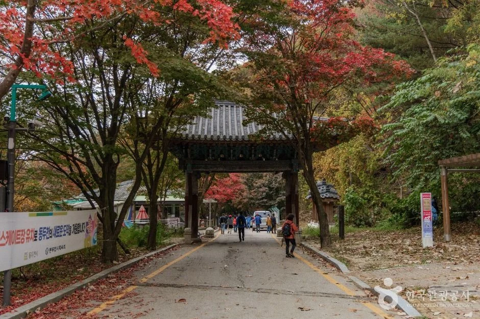
▲ 소요산 일주문 일대(한국관광공사 자재암 항목 사진). 촬영 시기는 확인하지 못했다. 사진=한국관광공사
3. 가는 법 — 1호선 소요산역과 자차
소요산은 수도권 전철 1호선(경원선) 소요산역에서 가장 접근이 쉽다. 위키백과 정리에 따르면 소요산역은 2023년 12월 16일 연천 연장에 맞춰 고가 승강장이 열렸고, 1번 출구 쪽에 버스 승강장과 소요산이 이어진다. 역에서 소요산 입구까지는 여러 안내가 도보 약 10분이라고 적지만 공식 거리 수치는 확인하지 못했다.
| 방법 | 내용 | 근거·한계 |
|---|---|---|
| 지하철 | 1호선 소요산역(1번 출구) 하차 → 도보 약 10분 → 소요산 입구 | 1번 출구 하차는 동두천시 누리집 안내. 도보 10분은 등산 블로그 안내이며 공식 거리 확인 못 함 |
| 자가용 | 동두천시청에서 3번 국도를 따라 북쪽으로 약 5km | TourAPI 소개문 |
| 주차 | TourAPI상 주차 가능. 관광지원센터 공영주차장(평화로2910번길 166)은 등산 블로그가 150~200대 규모·종일 2,000원이라고 안내 | 수용 대수는 공식 확인 못 함. 주말은 오전 9시 전 도착 권장이라는 블로그 조언 |
| 버스 | 동두천시 누리집은 소요산역 하차 노선으로 36번(소요산-수유역), 39번(전곡-도봉산역), 53번(전곡-덕정) 등을 안내. 포천 허브아일랜드행 57번·57-1번도 소요산에서 출발 | 노선·시간표는 시간이 지나 바뀔 수 있어 출발 전 확인 필요. 57번은 허브아일랜드 기사의 시간표 참고 |
| 입구~자재암 | 주차장→관광지원센터→요석공주 별궁지 표석→매표소→일주문→원효폭포 순, 자재암 앞은 계단 | 동두천시 누리집 등산로 안내. 입구~자재암 정확한 거리는 확인하지 못함 |
단풍철에는 갓길 주정차가 단속 대상이 될 수 있으니 단풍철 갓길 주정차 기사도 같이 보자. 주말 오전 정체와 주차장 만차 여부는 공식 실시간 안내를 찾지 못했다.
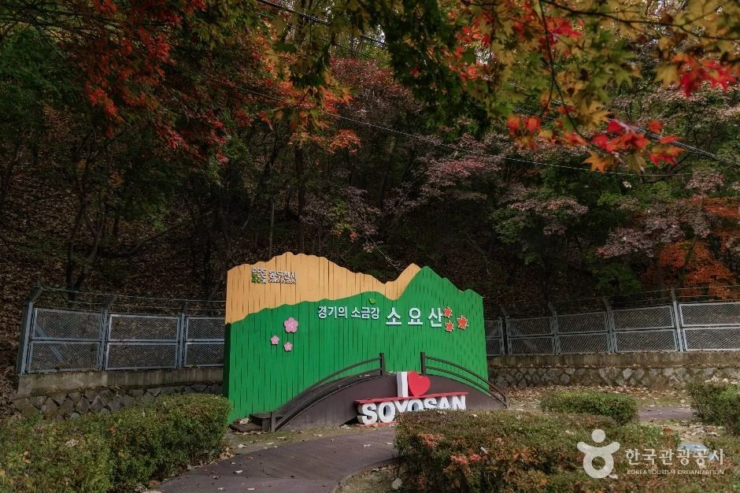
▲ 소요산 입구 환영 조형물(한국관광공사 소요산국민관광지 사진). 촬영 시기는 확인하지 못했다. 사진=한국관광공사
4. 입장료와 주차요금 계산
TourAPI 기준 입장료는 무료이고, 주차요금만 차종별로 낸다. 같은 정보를 옮긴 한 관광 사이트에는 입장료 '무료' 항목과 함께 어른 1,000원·청소년 600원·어린이 300원(단체 어른 900원·청소년 500원)도 나란히 적혀 있다. 과거 요금이 남은 것으로 보이지만 동두천시 누리집에서 확인하지 못했으므로, 현장 매표소 유무는 031-860-2059로 한 번 묻고 가는 편이 안전하다.
| 차종 | 주차요금 | 입장료(TourAPI) | 합계 예시 |
|---|---|---|---|
| 경형 | 1,000원 | 무료 | 1,000원 |
| 소형 | 2,000원 | 무료 | 2,000원 |
| 중형 | 3,000원 | 무료 | 3,000원 |
| 대형 | 5,000원 | 무료 | 5,000원 |
대중교통 이용객에게는 입장료도 주차요금도 들지 않는 셈이다. 다만 자재암 템플스테이·식당 요금처럼 TourAPI에 없는 항목은 확인하지 못했다.
5. 코스 — 자재암·원효폭포·하백운대는 어떻게 이어지나
소요산에는 원효대사가 수행했다는 전설에서 이름 붙은 원효폭포·원효대·원효굴·자재암이 모여 있다(TourAPI 소개). 동두천시 누리집 등산로 안내에 따르면 일주문 뒤 원효폭포 옆 속리교를 건너면 갈림길이 나오고, 왼쪽은 자재암 방향, 오른쪽은 공주봉 방향이다. 왼쪽 나무계단(108계단)을 오르면 원효대가 있는데 관음봉과 일주문을 배경으로 한 포토존이다. 자재암을 기점으로 본격 산행이 시작되며 하백운대·중백운대·상백운대·나한골·선녀탕·나한대·의상대·공주봉으로 이어진다.
| 코스 | 거리 | 소요시간 | 출처·비고 |
|---|---|---|---|
| 관광센터 → 자재암 → 선녀탕 → 자재암 → 일주문(초급) | 약 3.5km | 약 2시간 | 등산 블로그 2025(관광센터 출발·일주문 복귀 순환형 경로로 표기) |
| 자재암 일주문 → 하백운대 → 중백운대 → 상백운대 → 칼바위 → 선녀탕 | 6.5km | 약 3시간 | 한국관광공사 TourAPI 등산코스 |
| 관광센터 → 일주문 → 구절터 → 공주봉 → 의상대 → 샘터 하산 | 약 6.5km | 약 3시간 30분 | 등산 블로그. 공주봉~의상대 오르막은 10~15분이라는 안내 |
| 코스 전체(등산 6.5km 포함) | 9km | 약 4시간(등산 3시간 포함) | 한국관광공사 TourAPI 코스 정보(소요산 등반코스 항목) |
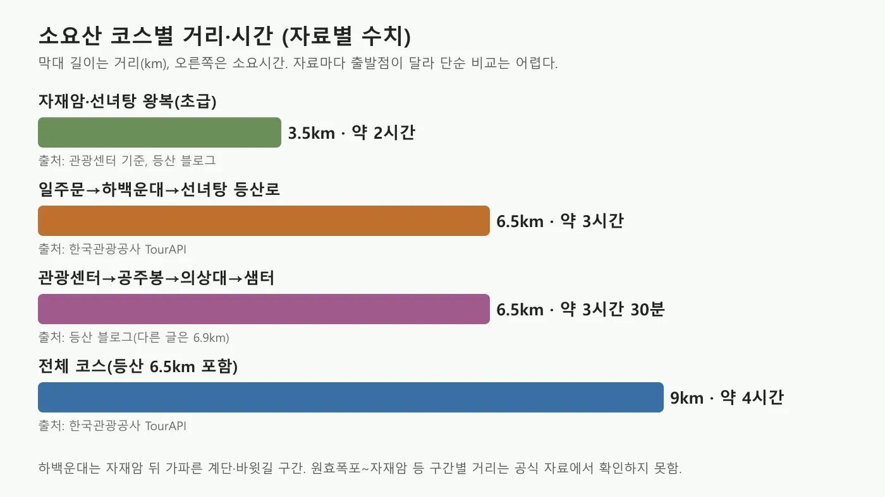
▲ 소요산 코스별 거리·소요시간 비교(자료별 수치). 사진=카프리즘 제작
구간별 거리는 확인하지 못한 곳이 많다. 이정표 사진에는 한 지점에서 자재암 0.65km, 중백운대 0.4km가 적혀 있지만 정확한 위치는 확인하지 못했다. 원효폭포~자재암, 자재암~하백운대 구간의 공식 거리와 시간도 찾지 못했으므로 위 표의 총 거리·시간만 믿자.
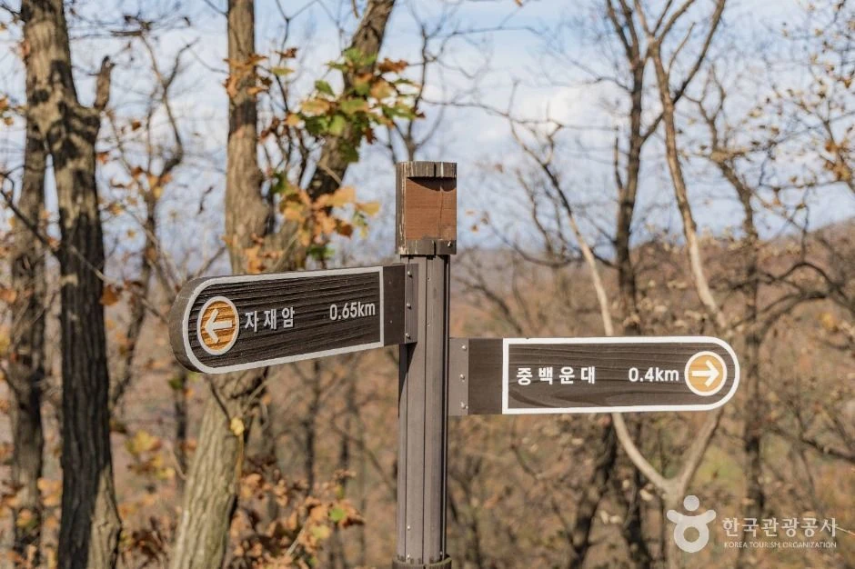
▲ 소요산 탐방로 이정표(한국관광공사 소요산국민관광지 사진). 촬영 시기는 확인하지 못했다. 사진=한국관광공사
자재암 — 바위와 굴 사이의 절
TourAPI 소개에 따르면 자재암은 신라 선덕여왕 14년(645)에 원효대사가 창건했다고 전해지고, 974년 중창, 1153년 화재 뒤 이듬해 중건, 한국전쟁에서 소실된 뒤 다시 지었다. 바위산 중턱의 암벽과 굴을 이용해 지은 점이 특징이다. 원효굴부터는 계단을 올라야 하고, 굴 앞 작은 폭포 옆에는 물자를 나르는 모노레일이 있다. 자재암 TourAPI 항목은 상시 개방·연중무휴, 문의 031-865-4045다.
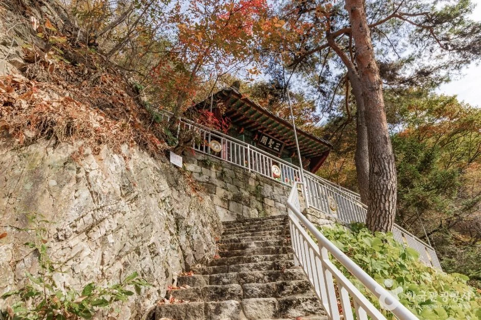
▲ 자재암으로 오르는 돌계단과 처마(한국관광공사 자재암 항목 사진). 촬영 시기는 확인하지 못했다. 사진=한국관광공사
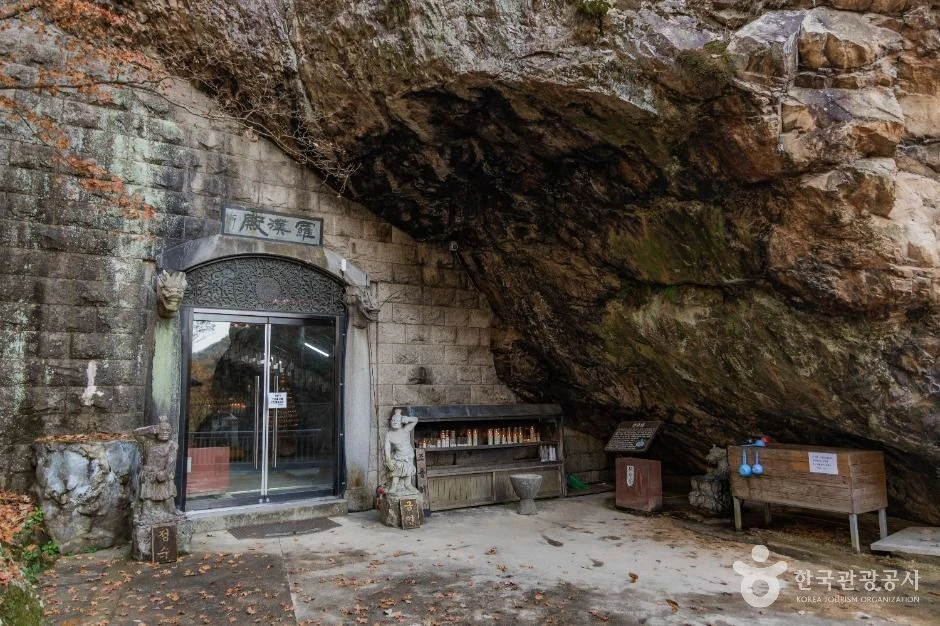
▲ 암벽 아래 굴을 이용한 건물 입구(한국관광공사 자재암 항목 사진). 촬영 시기는 확인하지 못했다. 사진=한국관광공사
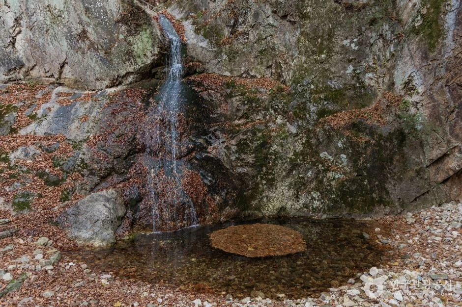
▲ 소요산 계곡의 폭포(한국관광공사 사진. 폭포 이름은 확인하지 못했다). 촬영 시기는 확인하지 못했다. 사진=한국관광공사
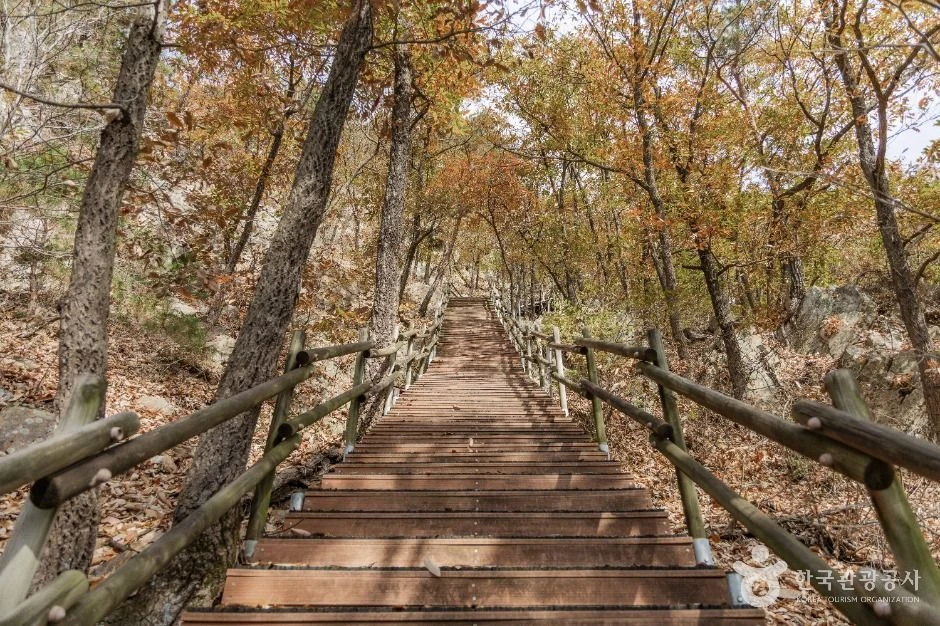
▲ 소요산 탐방로의 나무 계단(한국관광공사 사진). 촬영 시기는 확인하지 못했다. 사진=한국관광공사
6. 소요단풍문화제 — 2026년 10월 31일(토) 소요산 야외음악당
동두천시 문화관광 누리집의 '소요단풍문화제' 페이지는 이 행사를 1986년부터 시작되어 매년 10월 말 소요산 야외음악당에서 열리는 대표 축제로 소개하고, 2026년 일시를 10월 31일(토), 장소를 소요산 야외음악당, 주최를 동두천문화원으로 적어 두었다(2026-10-12 확인, 문의 문화예술과 031-860-2063). 시작 시각, 프로그램, 공연 가수, 회차(제38회로 추정)는 이 페이지와 검색한 언론 보도에서 확인하지 못했다. 같은 페이지는 어유소 장군 승전 행차 재현 행사를 함께 연다고 소개한다.
| 회차 | 일시 | 장소 | 프로그램 | 출처 |
|---|---|---|---|---|
| 제34회 | 2022년 10월 23일(일) | 소요산 야외음악당 | 어유소 장군 승전 행렬 퍼포먼스, 체험·전시·먹거리 마당, 가수 정수라 공연 | 뉴스서울 |
| 제37회(제16회 어유소장군 행차 재현 병행) | 2025년 10월 26일(일) 11시~ | 소요산 야외음악당 일원(보도에 따라 장소 표기 차이) | 플로깅 캠페인, 농악·난타 등 공연, 행차 재현 퍼레이드, 가수 박미경 무대, 챗GPT 관상 체험 부스 | 아시아경제(2025-10-20). 주최 동두천문화원, 후원 동두천시 |
| 2026년 | 10월 31일(토) | 소요산 야외음악당 | 확인하지 못함(어유소 장군 행차 재현 병행은 누리집 소개문) | 동두천시 문화관광 누리집, 주최 동두천문화원 |
10월 31일은 산림청 전국 단풍나무류 절정 예측일과 같은 날이고 토요일이라 소요산 일대 혼잡이 커질 수 있다. 2025년 보도에는 교통·주차 안내가 없었고 2026년 교통·주차 계획도 확인하지 못했으므로, 그날은 대중교통(1호선 소요산역)을 권한다. 세부 일정은 공지가 바뀔 수 있어 출발 전에 확인하자. 소요단풍문화제 안내 바로가기
7. 인근 코스 — 소요산에서 더 갈 만한 곳
| 장소 | 내용 | 운영·요금 |
|---|---|---|
| 자유수호평화박물관(평화로2910번길 96-63) | 한국전쟁 유엔 참전국 유물·영상 전시. 소요산 내 위치 | 무료. 09:00~18:00, 종료 30분 전까지 입장. 월요일(공휴일이면 다음 날)·1월 1일·설날·추석 휴관. 031-860-3330 |
| 동두천자연휴양림(탑동가산로 1) | 2020년 7월 1일 개장. 숲체험길·야영장·숙박시설 | 입장료 성인 2,000원·청소년 1,500원·어린이 1,000원. 주차 경차 2,000원·소·중형 3,000원·대형 4,000원. 09:00~18:00, 월요일 휴장. 031-860-3257 |
| 소요산 관광 거점시설 | 구 축산물브랜드육타운 리모델링, 올해 10월 개장 예정(세계일보 2026-07) | 개장 여부·개장일·요금·주차는 확인하지 못함(2026-08-10 현장 점검 기사 시점엔 공사 중). 개장 직후라면 혼잡·공사 소음 가능 |
자유수호평화박물관은 월요일이 휴관이라 오늘(10월 12일, 월요일)처럼 월요일에 소요산을 찾으면 문을 닫는다. 지도상 같은 권역이지만 소요산 입구에서의 정확한 도보 거리는 확인하지 못했다. 포천 쪽으로는 포천 허브아일랜드 핑크뮬리 기사의 57번 버스 시간표가, 연천 쪽으로는 연천 재인폭포 기사가 이어 볼 만하다.
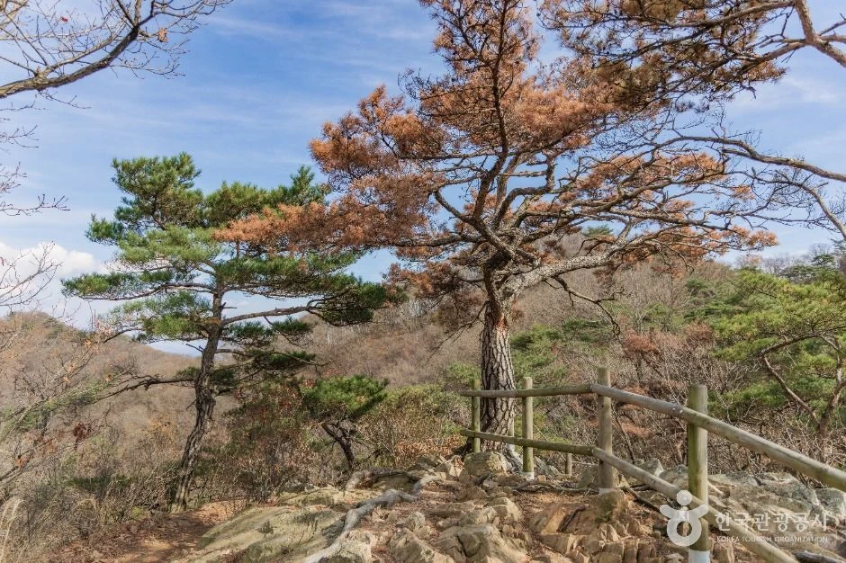
▲ 소요산 능선 전망 구간(한국관광공사 소요산국민관광지 사진). 촬영 시기는 확인하지 못했다. 사진=한국관광공사
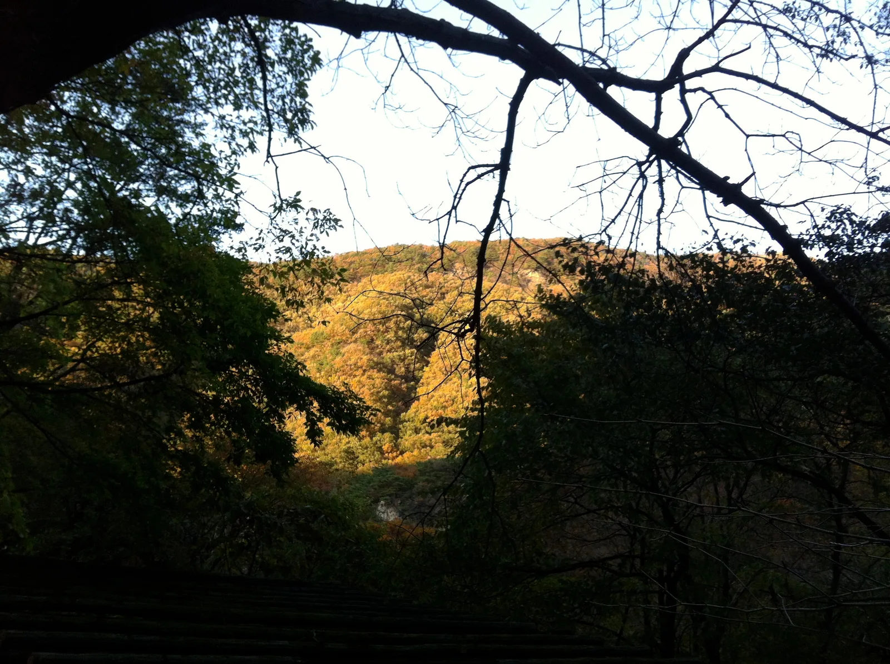
▲ 2011년 10월 22일 촬영(위키미디어 파일 정보). 역광에 어두운 사진이며 소요산 단풍 색을 가늠하는 참고용이다. 사진=Jjw(위키미디어 커먼즈, CC BY-SA 3.0)
8. 출발 전 주의 — 통제·월요일·안전
- 입산통제: 2026년 가을철 산불조심기간 시작일·소요산 탐방로 통제는 확인하지 못했다. 날짜 구분은 입산통제 날짜 기사를 참고하자.
- 월요일: 소요산 자체는 연중무휴이나 자유수호평화박물관·동두천자연휴양림은 월요일 휴관·휴장이다(TourAPI).
- 산행 구간: 동두천시 누리집은 소요산 난이도를 중급~상급, 산행시간을 1~4시간으로 안내한다. 자재암부터 본격 산행이므로 미끄러운 낙엽철에는 등산화·스틱을 준비하고 해가 지기 전에 하산하자.
- 공사·시설 변경: 동두천시는 소요산 일대 약 50만㎡에서 25개 세부사업을 단계적으로 추진한다고 밝혔다(세계일보 2026-07). 올해 가을 구간별 공사 통제는 확인하지 못했다.
- 문의 모음: 동두천시청 체육관광과 031-860-2059 / 2049, 자재암 031-865-4045, 자유수호평화박물관 031-860-3330, 관광문의 1330
9. 같이 보면 좋은 카프리즘 기사
✅ 출발 전 체크리스트
· 입장료 TourAPI 기준 무료, 주차 경형 1,000원~대형 5,000원(현장 요금은 031-860-2059 확인)
· 소요산 단독 단풍 예측은 공식값 없음. 이 글의 10월 24일~11월 1일은 카프리즘 추정
· 소요단풍문화제는 10월 31일(토) 소요산 야외음악당(동두천시 누리집). 세부 프로그램·교통 계획은 출발 전 031-860-2063 등으로 확인
· 대중교통은 1호선 소요산역 도보 약 10분(공식 거리 미확인), 자차는 주말 오전 일찍
· 월요일은 평화박물관·자연휴양림 휴관, 자재암부터는 본격 산행(중급~상급 안내)이니 신발·스틱 준비
10. 정리
소요산국민관광지는 TourAPI 기준 상시 개방·입장료 무료이고, 주차요금은 경형 1,000원부터 대형 5,000원까지다. 코스는 자재암·선녀탕 왕복 약 3.5km(2시간), 일주문~하백운대~선녀탕 6.5km(3시간), 전체 9km(4시간) 등 자료별 수치가 다르다.
소요단풍문화제는 동두천시 누리집에 2026년 10월 31일(토) 소요산 야외음악당으로 올라 있다. 소요산 단독 단풍 날짜와 입산통제 공고는 공식 자료에서 확인하지 못했다. 산림청 전국 절정 10월 31일(50%)과 북한산 평년 10월 27일(80%)을 참고선으로 한 10월 24일~11월 1일 전후는 추정이다.